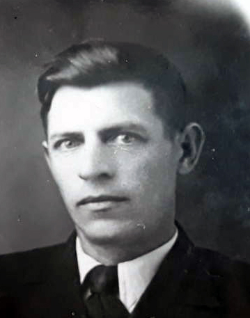
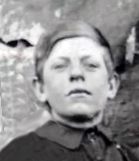

Продолжительность жизни: 78
Отец: Герилович Иван Викентьевич (1881 - 28.07.1931)
Мать: Герилович (Кононович) Анастасия Романовна (19.12.1878 - 1978)
Брат: Герилович Анисим Иванович (1904 - 08.12.1987)
Брат: Герилович Георгий Иванович (20.04.1916 - 08.12.2016)
Сестра: Злобина (Герилович) Мария Ивановна (24.08.1922)
Брат: Герилович Иван Иванович (20.12.1924)
Сестра: (Герилович) Александра Ивановна
Сестра: Плюсина (Герилович) Марина Ивановна
Сестра: (Герилович) Ефросинья Ивановна
Бывшая жена: Герилович Ульяна
Сын: Герилович Эдуард Васильевич
Жена: Герилович (Скоробогатова) Валентина Алексеевна (20.06.1926 - 11.06.1997)
Сын: Герилович Геннадий Васильевич (11.04.1948 - 25.08.2005)
Сын: Герилович Александр Васильевич (31.01.1957)
Родился: 23.12.1914. Отец: Герилович Иван Викентьевич. Мать: Герилович (Кононович) Анастасия Романовна.
Женился. Жена: Герилович Ульяна.
Женился. Жена: Герилович (Скоробогатова) Валентина Алексеевна.
Развёлся. Бывшая жена: Герилович Ульяна.
Родился сын: Герилович Эдуард Васильевич. Мать: Герилович Ульяна.
Родился сын: Герилович Геннадий Васильевич, 11.04.1948. Мать: Герилович (Скоробогатова) Валентина Алексеевна.
Родился сын: Герилович Александр Васильевич, 31.01.1957. Мать: Герилович (Скоробогатова) Валентина Алексеевна.
Умер: 01.06.1993. Причина смерти: ТЭЛА.
. . |